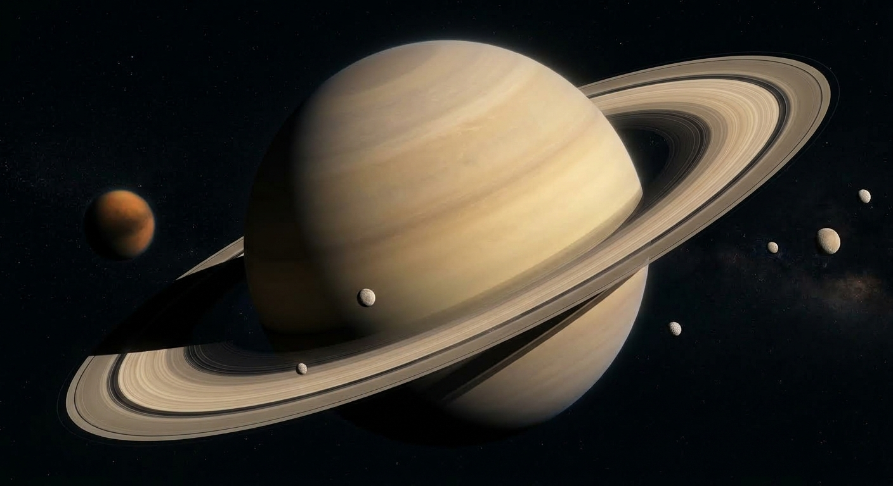

Saturno é o sexto planeta a partir do Sol.
Saturno é um gigante gasoso.
Possui um grande sistema de anéis.

Saturno é famoso por seu enorme sistema de anéis. Eles são formados principalmente por partículas de gelo, rochas e poeira.
Os anéis são divididos em diferentes regiões e podem ser observados com telescópios. Eles fazem de Saturno um dos planetas mais facilmente reconhecidos do Sistema Solar.
Saturno possui aproximadamente 9 vezes o diâmetro da Terra, sendo o segundo maior planeta do Sistema Solar.
Saturno é tão pouco denso que, em uma situação hipotética, sua densidade média seria menor que a da água. Um dia em Saturno também é bem curto, durando cerca de 10 horas e meia.